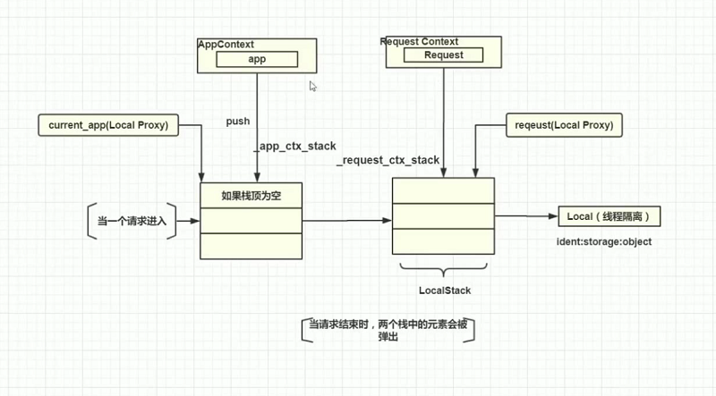
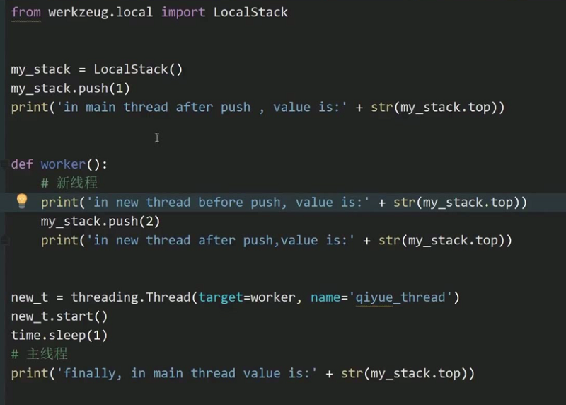
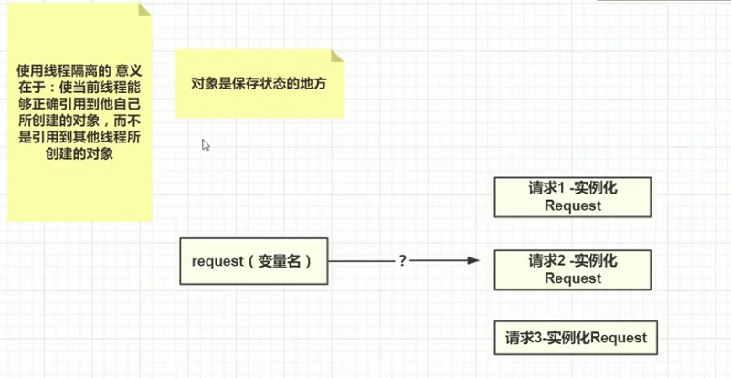

Flask 学习笔记|05 Flask中的多线程与线程隔离技术
5.1 线程进程与多线程
1.进程
- 资源是稀缺的，进程是竞争计算机资源的基本单位。
- 一台计算机至少要有一个进程。
- 单核CPU用眼只能执行一个应用程序吗？No，他可以在不同的应用程序直接进行切换。由于切换的时间非常短，短到人类无法感知到，所以造成了一种假象，一个进程可以同时执行多个进程。
- 多核CPU可以真正意义上的同时运行多个进程。
- 切换进程是计算机的一个最重要的功能-进程调度。每个算法有自己不同的操作系统来决定每个应用程序何时挂起，并切换到另一个进程。
- 进程/线程直接的切换，对资源的开销非常大。所以这是设计一个应用程序的关键。
- 操作系统在将一个进程切换到另一个进程的时候，会保存当前进程的状态，这个状态叫上下文。
2.线程
- 对于计算机编程来说，线程的重要性要远高于进程，一个进程可以有多个线程。
- 线程产生的原因：现在CPU的运行速度非常快，用进程来管理资源粒度太大了，不能够有效充分的利用CPU的高性能，所以需要一个更小的单元来管理和使用CPU的资源。
- 线程比进程更加灵活小巧轻量，并且切换线程的开销要比进程小很多的，这能让我们在单位之间内处理更多的事情。
- 线程进程分工不同，进程负责分配资源，如内存资源；线程利用CPU执行代码（代码落在计算机最底部，是一条条的指令，由CPU来执行，指令是需要资源才能完成他的功能的）
- 线程不管理和持有资源，但是他可以访问进程的资源来完成功能。
3.多线程
- 每段代码执行起来，都会有一个进程，并且会分配一个默认的线程，成为主线程
- 可以通过python内置threading来操作线程
import threading
# 获取当前线程
t = print(threading.current_thread())
# 获取线程的名字
print(t.getName())
def worker():
t = print(threading.current_thread())
print(t.getName())
# 创建一个新的线程，target是线程要运行的函数，name是线程名
new_t = threading.Thread(target=worker,name='new_thread')
# 启动一个线程
newt.start()
- 多线程编程的好处：更加充分的利用CPU的性能优势。可以将不同的线程运行在不同的核里。
- 多线程只是看起来是多个线程同时执行，实际上是交替执行，只是交替的实际非常短。
- 多线程编程是异步编程：1.主线程完全不知道其他线程的存在。2.主线程不依赖其他线程的执行结果。
5.2 Python和Flask的多线程
python不能充分利用多核CPU的优势：
因为python有一个全局解释器锁GIL（Global Interceptor Lock），这个全局解释器锁会不管有多少个核，我们一个进程有多少个线程，都限制了同一时间只能在一个核上运行一个线程。
为了解决线程安全问题引用了锁，python中有两种锁
- 细粒度锁：由程序员手动加锁
- 粗粒度锁：有python在解释器上加锁，同一时间只能运行一个核。
python有很多全局解释器，如cpython和jpython。GIL只是加在最常见的cpython上的，所以使用jpython可以去掉这个限制。
也可以采用多进程的方式来解决这个问题，但是这样会带来其他的问题，如多进程通信技术，进程切换带来的开销等
python的多线程到底是不是鸡肋
我们的程序从一个时间段内最多的操作类型，可以分类IO密集型和CPU密集型
- IO密集型：一个时间段内，查询数据库，请求网络资源，读写文件等操作居多的，则属于IO密集型。
- CPU密集型：一个时间段内，严重依赖CPU计算资源的操作（如圆周率的计算）非常多，则属于CPU密集型。
而我们大部分的编程都是IO密集型的，对于IO密集型的程序来源，Python的多线程是有意义的，例如在进行一个数据库查询的时候，大部分的时间都是在等待结果返回，等待的这段时间并不消耗CPU的资源，不如让给其他线程去执行。
flask的多线程以及问题
-
flask内置了webServer服务器，一般在生产环境会替换掉这个默认的服务器
-
flask内置的webServer服务器默认是使用单进程单线程的方式执行的，多个请求进来必须要一个一个的执行，不能同时执行，这是因为自己调试大部分情况下单进程单线程就足够了。
-
如果要开启多线程模式，只需要在运行Flask核心app对象的时候，设置关键字参数threaded=True即可。如果要开启多进程，将processes设置为True即可。
-
观察Flask多线程模式 的技巧 在新版pycharm上，启用debug模式（是工具的debug，不是Flask的debug），在视图函数上打一个断点，然后再浏览器上发多次请求，可以看到，处理每个请求的线程不一样
-
Flask在单线程的时候，request永远都指向的是为了处理当前请求而实例化的Requset对象，这没有问题；在多线程的时候，由于request只是一个变量，但是多个线程处理多个请求，就会实例化不同的Request对象，在某一时刻request变量指向哪一个Request对象是不确定的，这时候，如果在代码中获取request并且视图修改的话就会遇到问题
5.3 Flask中的线程隔离
Flask内部，通过维护一个dict来实现线程隔离。伪代码如下 request={thread_key1:Request1,thread_key2:Request2} 其中thread_key是线程的唯一id号，Request就是每次请求的Request对象
Flask内部引入了一个werkzeug的库，这个库里有一个local模块，里面有一个Local对象，Flask内部线程隔离就是通过操作Local对象实现的。
1. Local对象
Local对象实际上就是对字典原理的一个封装
class Local(object):
__slots__ = ('__storage__', '__ident_func__')
def __init__(self):
# 一个私有变量__storage__字典
object.__setattr__(self, '__storage__', {})
object.__setattr__(self, '__ident_func__', get_ident)
def __iter__(self):
return iter(self.__storage__.items())
def __call__(self, proxy):
"""Create a proxy for a name."""
return LocalProxy(self, proxy)
def __release_local__(self):
self.__storage__.pop(self.__ident_func__(), None)
def __getattr__(self, name):
try:
return self.__storage__[self.__ident_func__()][name]
except KeyError:
raise AttributeError(name)
def __setattr__(self, name, value):
# 取当前线程的线程ID号
ident = self.__ident_func__()
storage = self.__storage__
# 操作字典
try:
storage[ident][name] = value
except KeyError:
# 把线程id号作为key保存了起来
storage[ident] = {name: value}
def __delattr__(self, name):
try:
del self.__storage__[self.__ident_func__()][name]
except KeyError:
raise AttributeError(name)
使用线程隔离和不适用线程隔离的区别
定义一个对象，启动一个线程去修改这个对象，使用主线程打印这个对象
import threading
import time
class A:
b = 1
my_obj = A()
def worker():
my_obj.b = 2
new_thread = threading.Thread(target=worker, name="new_thread")
new_thread.start()
time.sleep(1)
# 主线程
print(my_obj.b)
# 打印结果为2
# 因为my_obj是主线程和新线程共享的对象
将my_obj实例化改为使用Local线程隔离对象
import threading
import time
from werkzeug.local import Local
class A:
b = 1
my_obj = Local()
my_obj.b = 1
def worker():
my_obj.b = 2
print("in new thread b is: ", my_obj.b)
new_thread = threading.Thread(target=worker, name="new_thread")
new_thread.start()
time.sleep(1)
print("in main thread b is:", my_obj.b)
# 结果
in new thread b is: 2
in main thread b is: 1
由于my_obj是一个线程隔离的对象，所以我们在新线程里修改my_obj是不会影响主线程里my_obj中的值的。他们保持了两个线程之间的数据的独立
Local的高明在于，他不需要我们去关心底层Local字典内部的细节，我们之间去操作Local对象的相关属性，这个操作本就是线程隔离的，给我们带来了很大的方便
2. 线程隔离的栈：LocalStack

接下来来继续讲解之前这张图右下角的部分。 通过Flask的源码，我们可以了解到_app_ctx_stack和_request_ctx_stack实际上是指向了LocalStack()对象，也就是一个线程隔离的栈,下面来看下源码
globals.py
# context locals
# 是一个LocalStack对象
_request_ctx_stack = LocalStack()
_app_ctx_stack = LocalStack()
current_app = LocalProxy(_find_app)
request = LocalProxy(partial(_lookup_req_object, 'request'))
session = LocalProxy(partial(_lookup_req_object, 'session'))
g = LocalProxy(partial(_lookup_app_object, 'g'))
LocalStack源码，依旧在werkzeug库 的local模块下
class LocalStack(object):
"""This class works similar to a :class:`Local` but keeps a stack
of objects instead. This is best explained with an example::
>>> ls = LocalStack()
>>> ls.push(42)
>>> ls.top
42
>>> ls.push(23)
>>> ls.top
23
>>> ls.pop()
23
>>> ls.top
42
They can be force released by using a :class:`LocalManager` or with
the :func:`release_local` function but the correct way is to pop the
item from the stack after using. When the stack is empty it will
no longer be bound to the current context (and as such released).
By calling the stack without arguments it returns a proxy that resolves to
the topmost item on the stack.
.. versionadded:: 0.6.1
"""
def __init__(self):
# 内部维护了一个Local对象作为私有变量
self._local = Local()
def __release_local__(self):
self._local.__release_local__()
def _get__ident_func__(self):
return self._local.__ident_func__
def _set__ident_func__(self, value):
object.__setattr__(self._local, '__ident_func__', value)
__ident_func__ = property(_get__ident_func__, _set__ident_func__)
del _get__ident_func__, _set__ident_func__
def __call__(self):
def _lookup():
rv = self.top
if rv is None:
raise RuntimeError('object unbound')
return rv
return LocalProxy(_lookup)
# 提供了push，pop方法，实际上就是在操作Local中的一个Stack
def push(self, obj):
"""Pushes a new item to the stack"""
rv = getattr(self._local, 'stack', None)
if rv is None:
self._local.stack = rv = []
rv.append(obj)
return rv
def pop(self):
"""Removes the topmost item from the stack, will return the
old value or `None` if the stack was already empty.
"""
stack = getattr(self._local, 'stack', None)
if stack is None:
return None
elif len(stack) == 1:
release_local(self._local)
return stack[-1]
else:
return stack.pop()
@property
def top(self):
"""The topmost item on the stack. If the stack is empty,
`None` is returned.
"""
try:
return self._local.stack[-1]
except (AttributeError, IndexError):
return None
Local,Local Stack,字典的关系 Local使用字典的方式实现了线程隔离 Local Stack封装了Local对象，将其作为自己的一个属性，实现了线程隔离的栈结构
3.LocalStack的基本用法
Local是使用·来直接操作字典中保存的对象。 LocalStack是使用它提供的一些push，pop的栈方法来操作对象
from werkzeug.local import LocalStack
s = LocalStack()
s.push(1)
s.push(2)
# top是属性@property,所以不需要加括号调用；
# 栈结构先进后出，所以先输出2print(s.top)
# top只取栈顶元素，不会讲他从栈中移除，所以这次还是2print(s.top)
# pop()是方法，会取出并移除栈顶元素print(s.pop())print(s.top)
# 结果2221
4.LocalStack作为线程隔离对象的意义
 从上到下，四个打印语句分别打印1，NULL,2,1；简单来说，就是两个线程会有两个栈结构，他们之间不会互相干扰。这就是LocalStack的意义
5.Flask中被线程隔离的对象
LocalStack有两个特性，一个是Local线程隔离的特性，一个是栈的特性。 Flask需要将AppContext，RequestContext做成线程隔离的，因为每次请求，在多线程环境下都是由多个线程创建。 我们想让request这一个变量名指向不同的Request对象是不可能的。 
但是我们可以做到在当前线程引用到request变量名的时候可以正确的找到他自己实例化的Request对象，这就是Flask中线程隔离的本质的意义
5.4 梳理串接flask的一些名词
1.线程隔离对象和被线程隔离的对象
- 线程隔离对象：Local，LocalStack这些，通过他们创建被线程隔离的对象
- 被线程隔离的对象：RequestContext，AppContext
2.current_app是被线程隔离的对象吗？
不是。 current_app是_app_ctx_stack的栈顶元素的app对象。他是全局唯一的，所以他不是线程隔离的对象，把他做成线程隔离的也没有意义，因为在字典中不同的线程id号指向的仍然是同一个对象。
3.关键词梳理
- 以线程ID号作为key的字典->Local->LocalStack
- AppContext,RequestContext -> LocalStack
- Flask->AppContext,Request->RequestContext
- current_app(LocalStack.top=AppContext,top.app=Flask)
- request(LocalStack.top=RequestContext,top.request=Request)
- 原文作者：Binean
- 原文链接：https://bzhou830.github.io/post/20160505flask05/
- 版权声明：本作品采用知识共享署名-非商业性使用-禁止演绎 4.0 国际许可协议进行许可，非商业转载请注明出处（作者，原文链接），商业转载请联系作者获得授权。